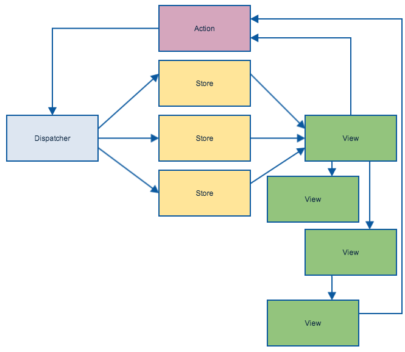

FLUX in the wild
Alexey Plutalov
,
Evil Martians
FLUX pattern

Ideas
Unidirectional dafa flow is central idea in FLUX;
No bidirectional data binding, as in other tools (Ember, Angular, ...);
Cascading updates;
FLUX is a pattern and consists of:
Dispatcher;
Stores;
Views;
Controller-Views
Actions;
Dispatcher
Is a applicaction central hub;
Converts UI events to data changes through actions.
Stores
Contain state and logic;
Similar to M from MVC, but presents objects collection;
Stores can combine business logic with events dispatching;
Stores haven't public methods.
Views
Classic representation layer.
Controller-Views
Representation layer;
Handle UI events, and update self and child views when data changes.
Action
Optional boilerplate element for flexible converting of UI events to dispatcher calls.
Without React
Web components are cool :)
Web components are cool :)
But clutter of events is painful :(
Web components are cool :)
But clutter of events is painful :(
FLUX is a simple way to organize event flow
Replace React components by your component library;
Organize your application events in unidirectional flow;
...
Profit
Questions and holywars